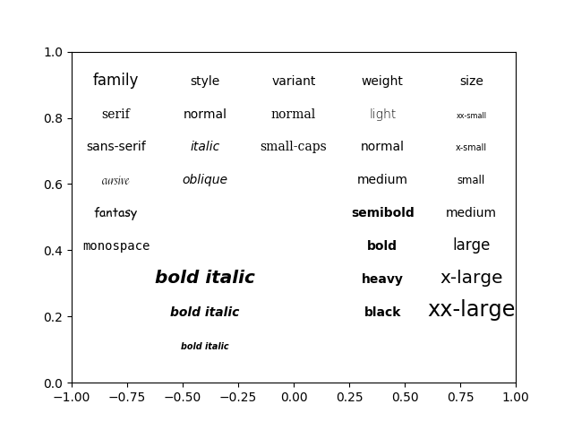

Version 2.1.2
Set font properties using kwargs.
See Fonts demo (object-oriented style) to achieve the same effect using setters.
from matplotlib.font_manager import FontProperties
import matplotlib.pyplot as plt
import numpy as np
plt.subplot(111, facecolor='w')
alignment = {'horizontalalignment': 'center', 'verticalalignment': 'baseline'}
# Show family options
families = ['serif', 'sans-serif', 'cursive', 'fantasy', 'monospace']
t = plt.text(-0.8, 0.9, 'family', size='large', **alignment)
yp = [0.8, 0.7, 0.6, 0.5, 0.4, 0.3, 0.2]
for k, family in enumerate(families):
t = plt.text(-0.8, yp[k], family, family=family, **alignment)
# Show style options
styles = ['normal', 'italic', 'oblique']
t = plt.text(-0.4, 0.9, 'style', **alignment)
for k, style in enumerate(styles):
t = plt.text(-0.4, yp[k], style, family='sans-serif', style=style,
**alignment)
# Show variant options
variants = ['normal', 'small-caps']
t = plt.text(0.0, 0.9, 'variant', **alignment)
for k, variant in enumerate(variants):
t = plt.text(0.0, yp[k], variant, family='serif', variant=variant,
**alignment)
# Show weight options
weights = ['light', 'normal', 'medium', 'semibold', 'bold', 'heavy', 'black']
t = plt.text(0.4, 0.9, 'weight', **alignment)
for k, weight in enumerate(weights):
t = plt.text(0.4, yp[k], weight, weight=weight,
**alignment)
# Show size options
sizes = ['xx-small', 'x-small', 'small', 'medium', 'large',
'x-large', 'xx-large']
t = plt.text(0.8, 0.9, 'size', **alignment)
for k, size in enumerate(sizes):
t = plt.text(0.8, yp[k], size, size=size,
**alignment)
x = -0.4
# Show bold italic
t = plt.text(x, 0.1, 'bold italic', style='italic',
weight='bold', size='x-small',
**alignment)
t = plt.text(x, 0.2, 'bold italic',
style='italic', weight='bold', size='medium',
**alignment)
t = plt.text(x, 0.3, 'bold italic',
style='italic', weight='bold', size='x-large',
**alignment)
plt.axis([-1, 1, 0, 1])
plt.show()
Total running time of the script: ( 0 minutes 0.022 seconds)